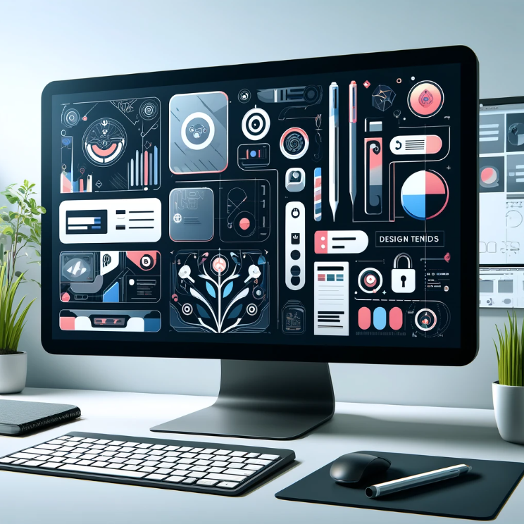

latest ui/ux design trends
published: may 24, 2024this year has seen remarkable innovation in UI/UX design, with designers pushing the boundaries of both aesthetics and functionality to enhance user engagement and satisfaction.
key trends in ui/ux design
- minimalism: clean, uncluttered layouts that focus on essential elements.
- vibrant colors and bold typography: these elements capture user attention and enhance readability.
- voice-activated interfaces: as voice technology improves, interfaces that respond to voice commands are becoming increasingly common.
these trends not only make products more appealing but also improve their usability, creating a seamless interaction that users find intuitive and engaging.

latest ui/ux design trends